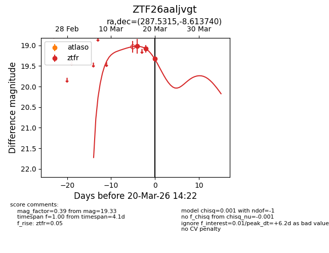
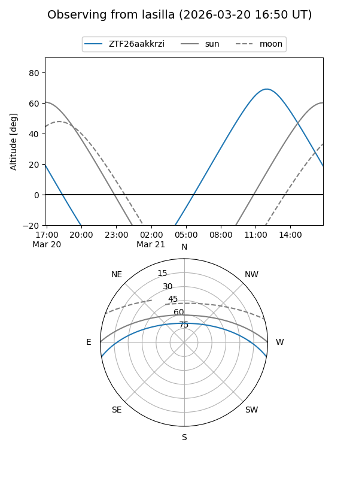
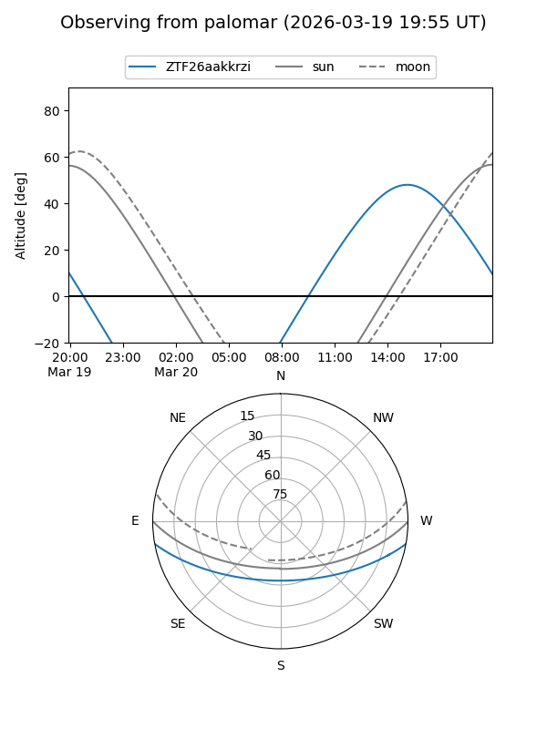
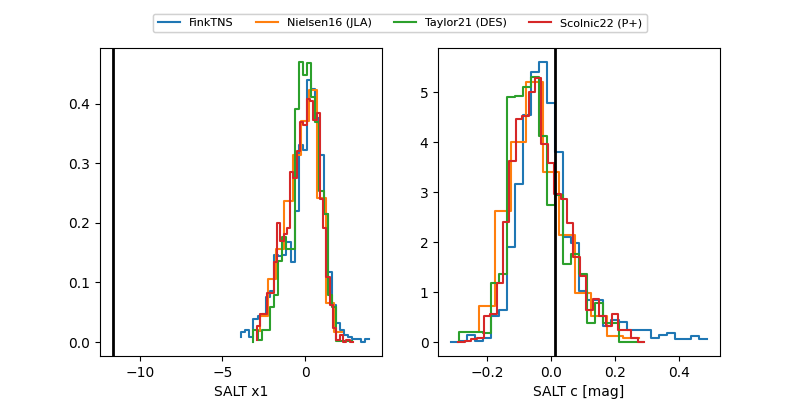

ZTF26aakkrzi
Target ZTF26aakkrzi at 2026-03-20 14:24
Aliases and brokers:
FINK: link
Lasair: link
ALeRCE: link
alt names
ZTF26aaljvgt (ztf,fink_ztf)
Coordinates:
equatorial (ra, dec) = 287.5315,-8.61374
equatorial (HMS+DMS) = 19:10:07.56,-08:36:49.47
galactic (l, b) = (27.3347,-8.04596)
Flags:
Photometry:
last ztfr=19.33
3 ztfr detections
Lightcurve

Visibility


Additional plots
